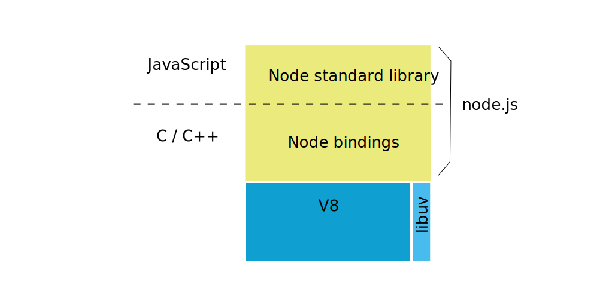
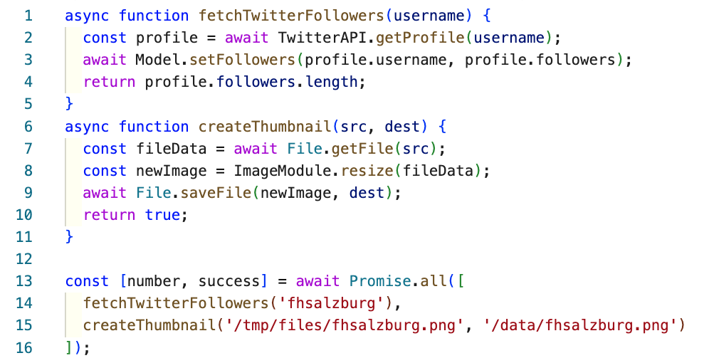
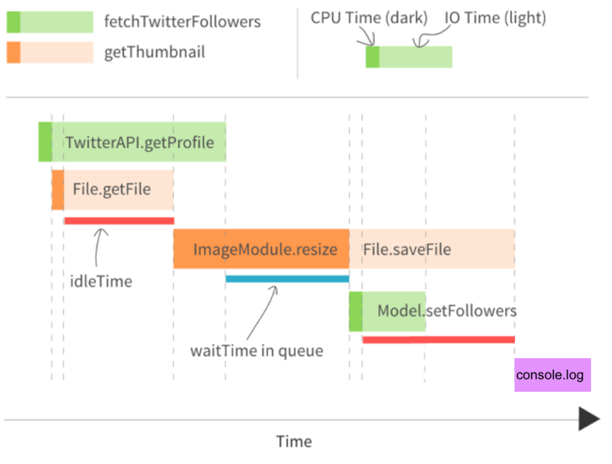

Node.js Basics
Node.js is just a javascript interpreter with a very small library added. With node you build your web server from scratch.
After working through this guide you should
- know how to install libraries for node.js with npm
- be able to write a simple web server
Slides - use arrow keys to navigate, esc to return to page view, f for fullscreen
1 What is node.js?
Node.js was originally written by Ryan Dahl in 2009 as a combination of two pieces of software that already existed:
- the google javascript interpreter v8 - code
- a library for asyncronous programming libuv - code
To this he added a library written in Javascript. In 2010 npm was added as a package manager for Javascript Libraries.
1.1 How big is node.js?

In 2023, according to openhub the node projects consist of:
- the node library: 1,6 millions lines of Javascript code
- node bindings: 2,5 millions lines of C code
- v8: 2,3 millions lines of code written in c++
- libuv: 100.000 lines of C code
1.2 Node Version Manager
Node Versions change fast. The node version manager (nvm) makes it easy to switch between versions:
$ nvm use 16.19
Now using node v16.19.0 (npm v8.19.3)
$ nvm use stable
Now using node v20.2.0 (npm v9.6.6
An alternative would be to use rtx, which can also handle other languages like ruby, php, python.
1.3 Hello Node
You write your program in Javascript:
console.log("Hello Node");
and run it with the node command:
$ node hello.js
Hello Node
You can also use node interactively:
$ node
> console.log("Hello Node");
Hello Node
undefined
> 1+2
3
> [CTRL]-[D]
1.4 Hello Web
To create a very simple Webserver we can use the package http:
import * as http from 'http';
const hostname = '127.0.0.1';
const port = 3000;
const server = http.createServer((req, res) => {
res.statusCode = 200;
res.setHeader('Content-Type', 'text/plain');
res.end('Hello Web\n');
});
server.listen(port, hostname, () => {
console.log(`Server running at http://${hostname}:${port}/`);
});
$ node app.js
Server running at http://127.0.0.1:3000/
2 Packages
Node had it's own package system called CommonJS, using the keyword require.
Since node 13 you can also use ECMAScript modules with the keyword import.
Use the type field in package.json to switch to ECMAScript modules,
or use extension .cjs for CommonJS and .mjs for modules.
// package.json
{
"type": "module"
}
Use barewords to import packages from node_modules, and relative
paths for your own source files:
import * as http from 'http';
import * as config from './config/index.js`;
npm was the first package manager for node.js. Today
there are many alternatives, from yarn to pnpm.
3 The javascript Event Loop
You have worked with Javascript and asyncronous programming before.
function f() {
console.log("foo");
setTimeout(g, 0);
console.log("baz");
h();
}
function g() {
console.log("bar");
}
function h() {
console.log("blix");
}
el.addEventListener("click", f);
If this code runs in the browser, the output on the console will be:
- foo
- baz
- blix
- bar
4 Classic Processing Model
PHP and Ruby on Rails have the same basic processing model. It is either implemented with threads or with processes.
- when the webserver first starts, a number of threads are started
- when a http comes in, it is handled by one thread from beginning to end
- the thread will probably spend some time waiting for slow I/O, like a database response
Apache comes with a module server_status that displays the
processes/threads and their status on a webpage. Here an example:

As you can see the server is running in prefork mode: when
the server is started it forks a certain number of worker processes,
but it can also fork additional worker process later on.
Currently 56 requests are being processed, 8 worker processes are idle, and there are a lot of additional slots for additional worker processes.
4.1 Syncronous Processing
Using syncronous I/O the program code will look something like this:
file = File.open(file_name, "r") # takes a long time, thread has to wait
data = file.read # takes a very long time, thread has to wait
file.close
As each thread comes with a fixed overhead of memory demand, you can only start so many threads on a given machine. You configure this in the web server configuration, e.g.
- when running PHP with apache and PHP-FPM with the configuration directives
pm.max_children, ``pm.start_servers,pm.min_spare_servers,pm.max_spare_servers, see php.net - when running Rails with Passenger with the configuration directives
PassengerMinInstancesundPassengerMaxPoolSize, see phusionpassenger.com
5 Node.js processing model
Node has a completely different model:
- there is one thread running the javascript event loop
- if the thread is free, it picks up the next event from the event queue. this might be a new http request
- all I/O is done asynchronosly: the main thread hands off the request to the database to a new, separate thread from a thread pool. When the request is done, and the data is available, this is added as a new event to the event queue
- after starting an asynchronos thread, the main thread immediately contious working

(diagram by @RichOnTheWeb)
5.1 Asyncronous with callbacks
Doing asyncronous I/O is implemented using callbacks in Javascript, and will look something like this:
import { readFile } from 'node:fs';
console.log("first");
readFile(file_name, (err, data) => {
if (err) throw err;
console.log("... much later, third");
console.log(data);
});
console.log("second");
If this is the whole program, the main thread will become free after
printing out second. It will pick up something else to do from
the event queue. Much later, when the data from the file has been
loaded, it will find the callback funktion on the event queue, and
finally reach third.
5.2 Asyncronous with async await
Node also offers the use of promises or async await:
import { readFile } from 'node:fs/promises';
const filePath = 'package.json';
const contents = await readFile(filePath, { encoding: 'utf8' });
The main thread will become free at await. It will pick up something else to do from
the event queue. Much later, when the data from the file has been
loaded, the program will continue with assigning the data to the constant contents.
5.3 Complex Example


5.4 IO-bound vs. CPU-bound
Describes two kinds of performance bottlenecks
- An I/O-bound application waits most of the time for network, filesystem and database. Running on a faster CPU would not help.
- A CPU-bound application spends most of the time using the CPU, running on a faster CPU would help.
The node process model helps with I/O-bound applications: If your app is I/O-bound, the event loop will be able to serve many requests, while other threads handling the acutal I/O will run on other kernels
If one aspect of your app is CPU-bound it will monopolize that kernel, (other) requests cannot be served. Therefore node and is not well suited for CPU bound applications.
6 Streams
Streams are a basic bilding block of a node application. Without streams, you have to read the whole file before you can send it:
import { readFile } from 'node:fs/promises';
router.get('/all', function(req, res, next) {
const contents = await readFile(path.join(__dirname, '../giant.html'), { encoding: 'utf8' });
res.statusCode = 200;
res.setHeader('Content-Type', 'text/html');
res.end(contents);
});
6.1 Using Streams
Better: connect a stream reading the file to the stream that is the HTTP response:
import { createReadStream } from 'node:fs';
router.get('/stream', function(req, res, next) {
let readStream = fs.createReadStream(path.join(__dirname, '../giant.html'));
res.setHeader('Content-Type', 'text/html');
readStream.pipe(res);
});
.pipe() takes care of listening for 'data' and 'end' events from the fs.createReadStream().
This code is not only cleaner, but now the giant.html file will be written to clients one chunk
at a time immediately as they are received from the disk.
Using .pipe() has other benefits too, like handling backpressure automatically
so that node won't buffer chunks into memory needlessly when the remote
client is on a really slow or high-latency connection.
You can also stream data from the database.